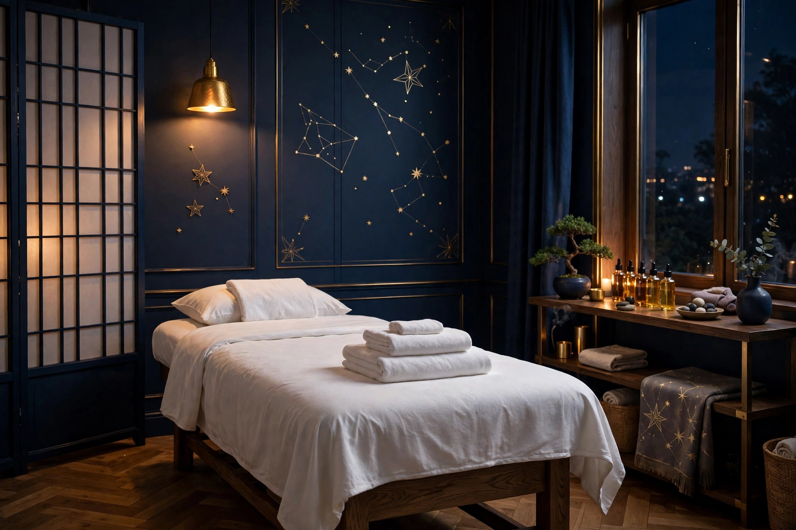
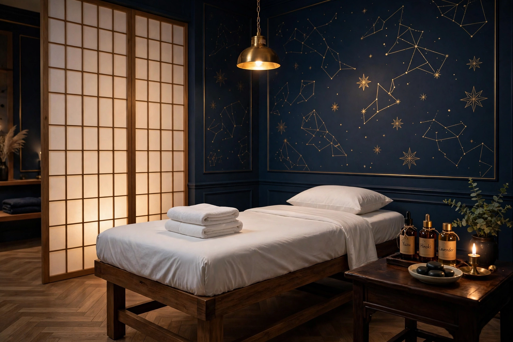
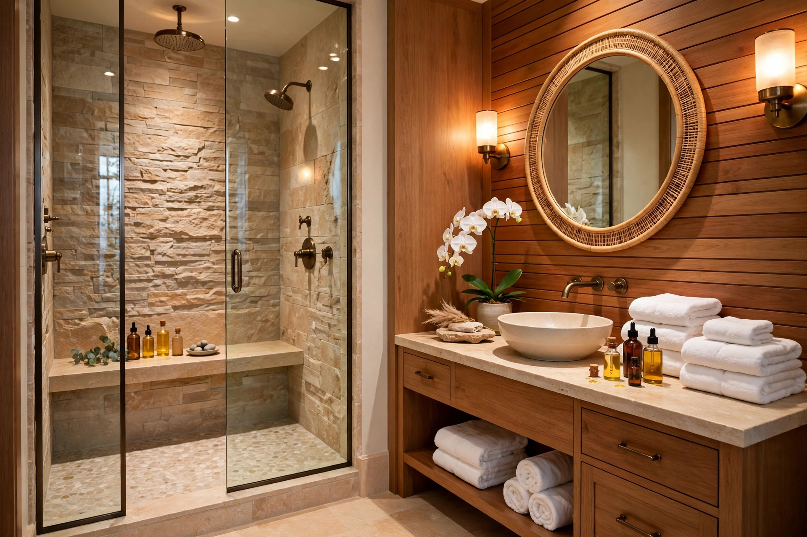

新着チェックAromatherapyアロマテラピー
精油の基礎
精油の基礎
本 ｜ アロマ・精油
香りの基礎を学ぶ本を探す
精油のプロフィールやブレンドの考え方を、図解で学べる入門書・図鑑のジャンルです。初めての一冊にも、学び直しにも。
選び方のポイント：精油ごとの注意事項や成分の説明があるか、写真や図が多いかを確認すると使いやすい一冊に出会えます。
LINE公式アカウントでお問い合わせ
ご予約・お問い合わせはLINEで受け付けています
シャワーも利用できる女性専用サロン。オイルマッサージと美容整体を組み合わせ、仕事帰りの体を丁寧にほぐします。
施術は男性セラピストが担当します

ステラシリウスは、姉妹店ステラポラリス（梅田）と同じ設計思想で生まれた、難波の女性専用サロンです。

鍼灸師として30年、体を見続けてきた経験から生まれた施術です。経絡（けいらく）の流れに沿ってオイルで深くほぐし、美容整体で骨格と筋肉のバランスを整えます。「その場しのぎではない、翌日が軽い体」を目指します。

ステラシリウス（難波）は、シャワー完備の完全個室で営業しています。お仕事帰りに汗を流してから施術を受けることも、施術後にオイルを洗い流してさっぱりとお帰りになることもできます。
施術で大切にしている、経絡の流れと姿勢の指標を図でご紹介します。


症状のキーワードから体を読み解くのが、東洋医学の得意分野です。長年の不調もご相談ください。
気になる症状ごとに、要因の考え方や日常のセルフケア、医療機関への受診の目安を整理した読み物です。原因や効果を断定するものではありませんので、判断の材料の一つとしてお読みください。
天気が変わる頃になると頭が重く感じる、こめかみや後頭部が気になる。季節の変わり目に感じやすい頭痛の一般的な解説と考えられる要因、日常で取り入れやすいセルフケア、受診の目安を整理しました。
鏡や写真で背中の丸みが気になる、座っているとつい前かがみになる。姿勢・猫背の考えられる要因と、座り方・立ち方を見直すポイント、日常で取り入れやすいセルフケア、受診の目安を整理しました。
一日パソコンに向かったあと、肩の重さや首・背中の張りが気になる。デスクワーク後に感じやすい肩こりの要因の考え方と、仕事の合間や帰宅後に取り入れやすいセルフケア、受診の目安を整理しました。
布団に入ってもなかなか眠れない、眠りが浅くて翌朝すっきりしない。寝つきや眠りの浅さの考えられる要因と、夜の時間に取り入れやすい過ごし方、受診の目安を整理しました。
一日の終わりに目の奥が重い、画面の文字がかすんで見える。眼精疲労の要因の考え方と、仕事の合間や帰宅後に取り入れやすいセルフケア、受診の目安を整理しました。
座りっぱなしの日の夕方に感じる腰の重さや張り。考えられる要因の例と、日常で取り入れやすいセルフケア、先に医療機関へ相談したい目安を整理しました。
サロンの学びと、ご自宅でのセルフケアに役立つ本と道具をテーマごとにご紹介します。新刊・改訂版のチェックや季節のおすすめは、随時このコーナーで更新します。
更新日：2026年10月30日
PR表記：このコーナーにはAmazonアソシエイトのリンクが含まれます。価格・在庫・仕様はリンク先のAmazonのページでご確認ください。効能をうたうものではなく、選び方の参考としてご紹介しています。
アロマ、東洋医学、姿勢とセルフケア——施術の土台になるテーマから、今読みたい本の探し方をご案内します。各ボタンからAmazonの検索結果で、新刊・改訂版を含む最新のラインアップを確認できます。
本 ｜ アロマ・精油
精油のプロフィールやブレンドの考え方を、図解で学べる入門書・図鑑のジャンルです。初めての一冊にも、学び直しにも。
選び方のポイント：精油ごとの注意事項や成分の説明があるか、写真や図が多いかを確認すると使いやすい一冊に出会えます。
本 ｜ 東洋医学・経絡
経絡の流れや経穴（ツボ）の位置を、体の図とあわせて学べるジャンルです。コラムの「経絡と姿勢の見方」とあわせてどうぞ。
選び方のポイント：全身図が大きく、経穴の位置が部位ごとに分かれているものは、日常のセルフケアにも参照しやすいです。
本 ｜ 姿勢・セルフケア
肩こり・腰の重さ・脚のむくみなど、日常のケアをテーマにした本のジャンルです。セルフケア資料ライブラリとあわせてご活用ください。
選び方のポイント：1回の動きが短時間ででき、写真つきで手順が追えるものは、無理なく続けやすいです。痛みがあるときは無理をしないでください。
ご自宅でのケアや、香りのある夜の時間に取り入れやすい道具のジャンルです。サイズや素材、使い方の注意書きを確認してから選ぶのがおすすめです。
商品 ｜ オイル・ケア用品
セルフマッサージや保湿ケアに使われる、植物由来のキャリアオイルのジャンルです。ホホバ、スイートアーモンドなどが定番です。
選び方のポイント：容量と遮光容器かどうか、開封後の使用期限の目安を確認してください。初めて使うときは少量から試してください。
商品 ｜ アロマ雑貨
寝る前の時間や読書の時間に、香りをそっと楽しむためのディフューザーやアロマストーンのジャンルです。
選び方のポイント：使う部屋の広さに合うタイプか、お手入れのしやすさを確認してください。火を使うタイプは取り扱いにご注意ください。
商品 ｜ セルフケア用品
背中や脚まわりのセルフケアに使われる、フォームローラーやストレッチボールのジャンルです。
選び方のポイント：硬さとサイズが体に合うかを確認してください。強い痛みを感じる使い方は避け、気持ちよい範囲で使ってください。
このコーナーは、サロンのテーマに合う本と商品の「探し方」をご紹介するものです。特定の商品の効果を保証するものではありません。気になる症状がある場合は、セルフケアより先に医療機関へご相談ください。
肩こり・腰の重さ・脚のむくみなど、症状別のセルフケア資料をまとめた「セルフケア資料ライブラリ」を無料で公開しています。ご自宅でできるケアのヒントとして、どなたでも無料でお読みいただけます。
また、ご自身の姿勢の状態を知る「無料姿勢チェック」のお申込も、資料ライブラリから行えます。施術の合間のセルフケアに、ぜひご活用ください。
入室方法はご予約確定後にご案内します。体調やお悩みをうかがい、当日の施術を組み立てます。
ご希望の方は施術前にシャワーで汗を流し、施術着にお着替えいただきます。
骨盤・背骨・肩甲骨まわりのバランスを整え、オイルが巡りやすい体へ。
経絡の流れに沿って全身を深くほぐします。タオルで丁寧に覆い、露出を最小限に保ちます。
施術後のシャワーでオイルを洗い流し、ゆっくりとお支度いただけます。
体の状態とセルフケアのポイントをお伝えします。無理な勧誘は一切ありません。

ひらが のぶひと ・ 施術歴30年 ・ 男性セラピスト
施術歴30年。鍼灸師（国家資格）としての臨床経験を土台に、オイルマッサージと美容整体を組み合わせた施術を行っています。東洋医学の「体はつながっている」という考え方を大切にし、痛い場所だけではなく、巡り全体から不調の理由を探ります。
当サロンは男性セラピストが施術を担当します。その点を明記したうえで、タオルワークの徹底、完全個室、健全な施術のみの提供をお約束します。初めての方も安心してお越しください。
セラピストとして一緒に働きたい方へ
大阪市浪速区幸町1-2-9 RE-005 502号で営業しています。JR難波駅から徒歩5分、シャワー完備の完全個室です。
| 店名 | ステラシリウス（Stella Sirius）難波 |
|---|---|
| エリア | 大阪市浪速区幸町1-2-9 RE-005 502号（JR難波駅 徒歩5分） |
| 営業時間 | 月〜土 17:00〜22:00／日曜 12:00〜22:00 |
| 予約 | 完全予約制・女性専用 |
| 設備 | 完全個室／シャワー完備 |
| 料金 | 90分 10,000円（税込） |
| 施術内容 | オイルマッサージ・美容整体（鍼灸施術は行いません） |
ご利用前によくいただくご質問をまとめました。
ご予約はLINE公式から受け付けています。ご希望の日時とコースをお知らせください。
ご来店・カウンセリングのあと、ご希望の方はシャワーで汗を流し、施術着にお着替えいただきます。美容整体で体のバランスを整えてから、オイルマッサージで全身をほぐします。施術後はシャワーでオイルを洗い流してゆっくりお支度いただき、最後にアフターカウンセリングで体の状態とセルフケアのポイントをお伝えします。
ご不安は自然なことだと思います。当店では、施術範囲の事前説明、施術部位以外へのタオル掛け、お着替え時の退室を徹底します。性的なサービスは一切行いません。少しでも不安な点は、ご予約時にご相談ください。
カウンセリングで当日のお悩みや体の状態をうかがい、それに合わせて施術内容を組み立てます。施術中も、強さが合わないと感じたら遠慮なくお声がけください。
ご予約は、下のフォームで「予約希望文」を作成し、コピーしてLINE公式アカウントへお送りください。空き状況を確認して返信します。
ご予約はLINE公式から受け付けています。